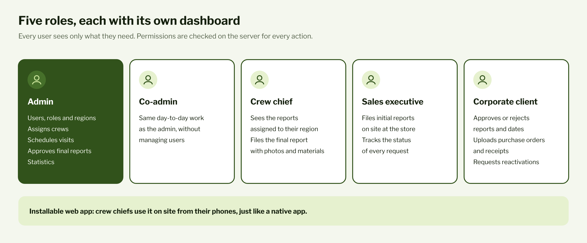
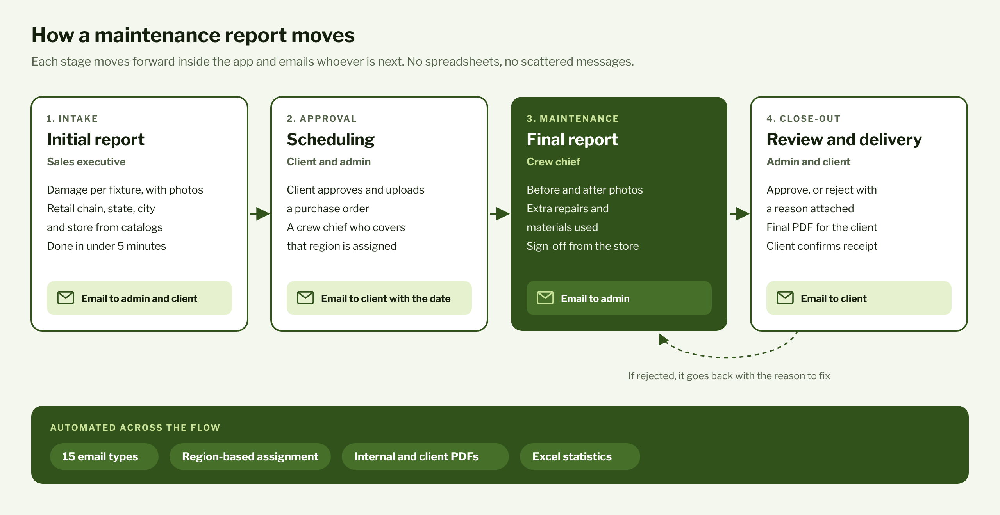

Freelance
ERP web app
A custom web app that follows every maintenance request from the moment it's logged in the store to the moment the client signs off on the finished job.
Confidential project. At the client's request, their data stays private and the source code can't be published. Screenshots use mock data.
- Role
- Full Stack Developer and project lead
- Timeline
- Dec 2025 - Feb 2026
- Users
- 60+ staff and 20+ clients
- Time saved
- 1 to 2 h a day on reports
- Stack
- Django, Tailwind CSS, PostgreSQL, Docker, Google Cloud

Context
The client is a retail visual merchandising company. It installs, repairs and maintains store fixtures (display cases, counters and stands) in shopping centers across Mexico, with its own field crews and a portfolio of corporate clients.
Before the app, reports and requests were spread across PowerPoint decks, Excel sheets, Word documents and even WhatsApp chats:
- Reports went missing, and it was hard to tell which photos and details belonged to which job.
- Crew chiefs had no single source of truth for what to fix, where and when.
- The owner had no clear view of each job's status or the materials it used.
- Every report looked different, and putting one together took far too long.
The company needed structure, faster communication and documentation everyone could trust.
My role
I led the project from start to finish. I gathered requirements with the client, defined the roles and the workflow, coordinated the development team, built the application and ran the Google Cloud infrastructure through delivery.
What I built
- Roles: five user profiles, each with its own dashboard and permissions.
- Initial report: a guided form with catalogs and photos for every damaged item.
- Approval: the client approves, uploads a purchase order and confirms the date.
- Final report: before and after photos, materials used and a sign-off from the store.
- Automatic PDFs: an internal version and a client-facing one.
- Excel statistics: every fixture serviced, ready for analysis.
- Installable web app: crew chiefs run it straight from their phones.

Automated workflows
- Email at every stage: 15 email types tell the right person when a report is created, approved, scheduled, completed, rejected or reactivated. Clients also get reminders to upload their purchase order and invoice acknowledgment.
- Region-based assignment: when a report is assigned, the app only lists crew chiefs who cover the state the store is in.
- Hands-free statistics: data from every completed report flows into the statistics report with no manual entry.

A look inside
Screenshots of the app with mock data. Names, clients, brands and the logo have been replaced. The app was built for a Mexican team, so its interface is in Spanish.


Infrastructure
The app runs in Docker containers on Cloud Run, with the database on Cloud SQL (PostgreSQL), photos and PDFs on Cloud Storage, and deployments through Cloud Build.
Challenges
- iPhone photos: phones uploaded HEIC images that neither browsers nor the PDF generator could read. The server now converts them on upload.
- Cost vs. performance: I tested several Cloud Run configurations until I found an affordable one that handled stress tests of 10 reports per minute with zero errors.
- One workflow, five roles: every stage checks on the server who's allowed to move a report forward, so no one can approve or edit something that isn't theirs.
Tech stack
Impact
1 to 2 h
saved every day on writing and reviewing reports, according to the client. Reports now follow one standard and take under 5 minutes to create and fill out. The app is used by 60+ staff members, the company's owners and 20+ clients, and every stage of the work comes with its own email notification.
Confidentiality
Under our agreement, the client's name, the app's domain, the source code and user data stay private. The diagrams are my own, and the screenshots use mock data with the client's permission.